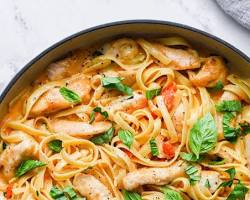

Pasta

Description
A quick and comforting classic! Fresh tomato sauce for a pasta dish that's simple yet satisfying.
Ingredients
- 1 box spaghetti
- 1 tablespoon olive oil
- 1 onion, chopped
- Salt and pepper to taste
Steps
- Cook spaghetti according to package directions.
- Heat olive oil in a pan and put onions until softened.
- Season with salt and pepper.
- Season with salt and pepper.
- Toss with cooked pasta and serve.